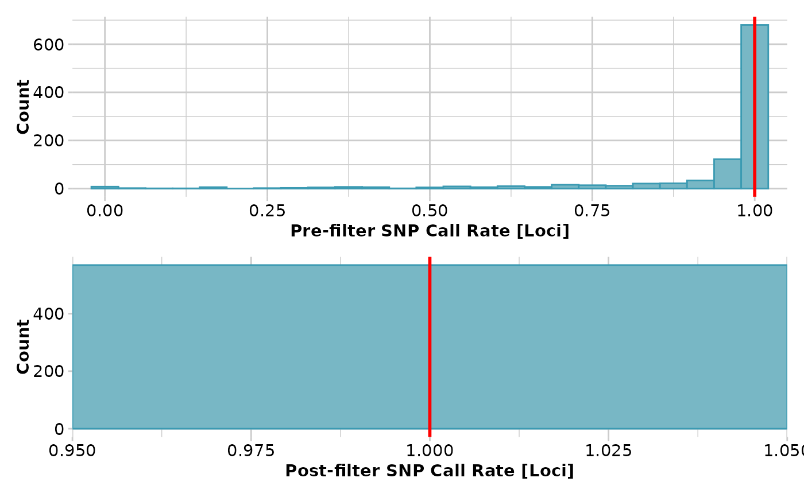

Calculates a pairwise Fst values for populations in a genlight object
Source:R/gl.fst.pop.r
gl.fst.pop.RdThis script calculates pairwise Fst values based on the implementation in the StAMPP package (?stamppFst). It allows to run bootstrap to estimate probability of Fst values to be different from zero. For detailed information please check the help pages (?stamppFst).
Arguments
- x
Name of the genlight containing the SNP genotypes [required].
- nboots
Number of bootstraps to perform across loci to generate confidence intervals and p-values [default 1].
- percent
Percentile to calculate the confidence interval around [default 95].
- nclusters
Number of processor threads or cores to use during calculations [default 1].
- verbose
Verbosity: 0, silent or fatal errors; 1, begin and end; 2, progress log ; 3, progress and results summary; 5, full report [default 2, unless specified using gl.set.verbosity].
Value
A matrix of distances between populations (class dist), if nboots =1,
otherwise a list with Fsts (in a matrix), Pvalues (a matrix of pvalues),
Bootstraps results (data frame of all runs). Hint: Use
as.matrix(as.dist(fsts)) if you want to have a squared matrix with
symmetric entries returned, instead of a dist object.
Author
Bernd Gruber (bugs? Post to https://groups.google.com/d/forum/dartr)
Examples
test <- gl.filter.callrate(platypus.gl,threshold = 1)
#> Starting gl.filter.callrate
#> Processing genlight object with SNP data
#> Warning: data include loci that are scored NA across all individuals.
#> Consider filtering using gl <- gl.filter.allna(gl)
#> Warning: Data may include monomorphic loci in call rate
#> calculations for filtering
#> Recalculating Call Rate
#> Removing loci based on Call Rate, threshold = 1
#>

#> Completed: gl.filter.callrate
#>
test <- gl.filter.monomorphs(test)
#> Starting gl.filter.monomorphs
#> Processing genlight object with SNP data
#> Identifying monomorphic loci
#> Removing monomorphic loci and loci with all missing
#> data
#> Completed: gl.filter.monomorphs
#>
out <- gl.fst.pop(test, nboots=1)
#> Starting gl.fst.pop
#> Processing genlight object with SNP data
#> Completed: gl.fst.pop
#>